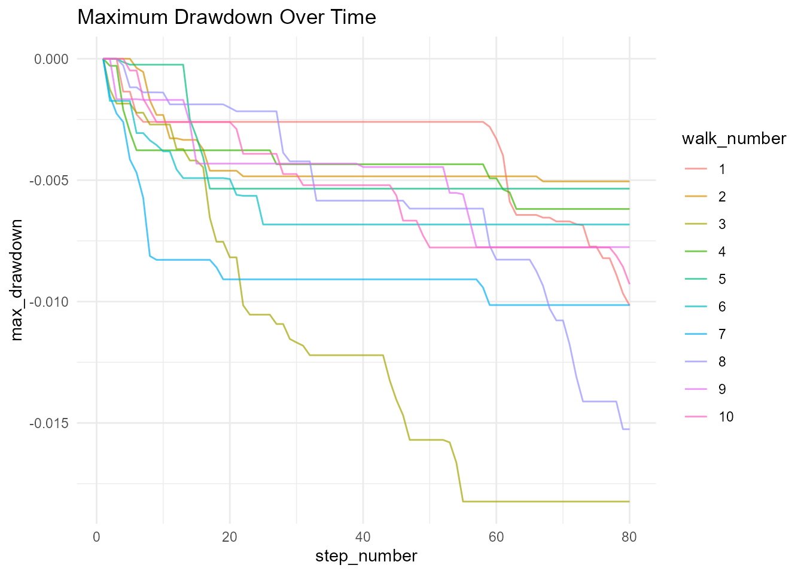
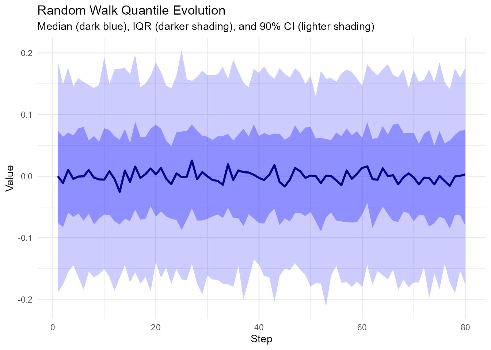
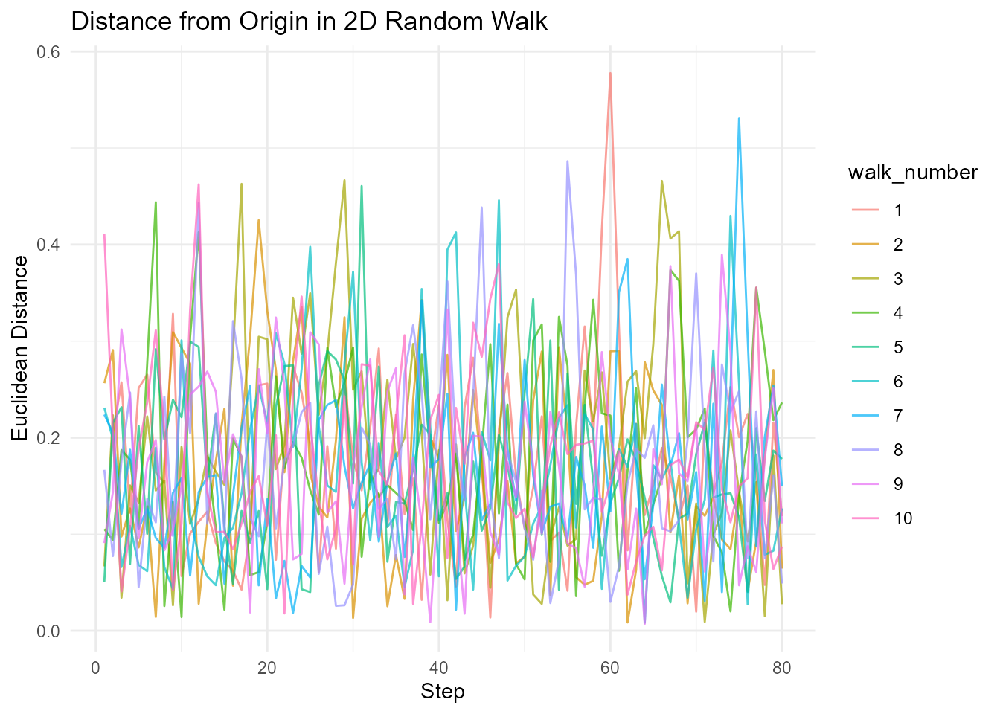
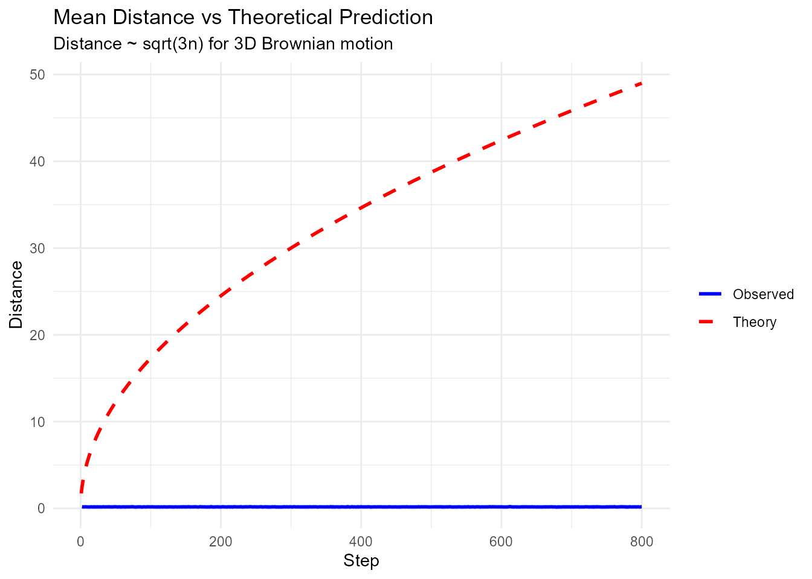
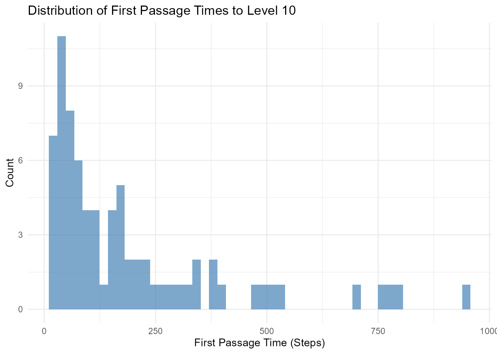
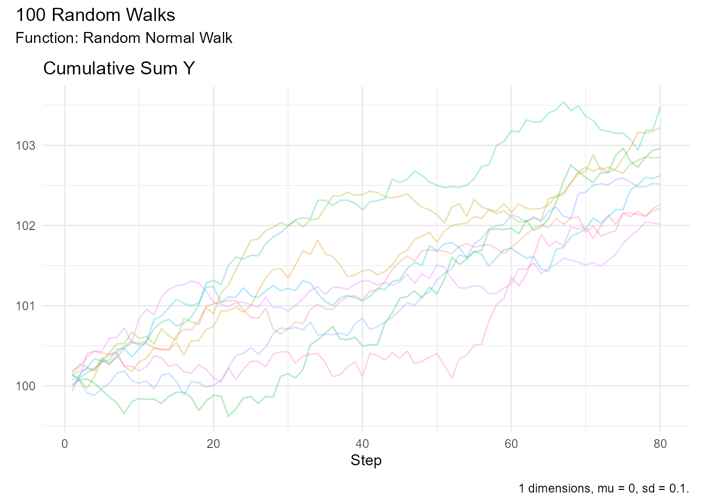
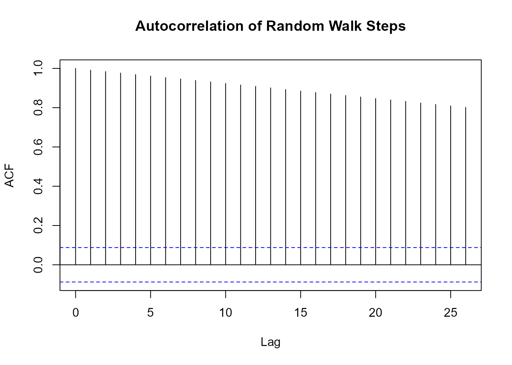

Statistical Analysis Guide
Source:vignettes/statistical-analysis-guide.Rmd
statistical-analysis-guide.RmdRandomWalker provides comprehensive statistical analysis capabilities for random walks. This guide covers all the tools available for analyzing and understanding your random walk data.
Summary Statistics
Basic Summary with summarize_walks()
The summarize_walks() function computes comprehensive
statistics:
# Generate walks
walks <- random_normal_walk(.num_walks = 30, .n = 100)
# Overall summary
walks |> summarize_walks(.value = y)
#> Registered S3 method overwritten by 'quantmod':
#> method from
#> as.zoo.data.frame zoo
#> Warning: There was 1 warning in `dplyr::summarize()`.
#> ℹ In argument: `geometric_mean = exp(mean(log(y)))`.
#> Caused by warning in `log()`:
#> ! NaNs produced
#> # A tibble: 1 × 16
#> fns fns_name obs mean_val median range quantile_lo quantile_hi variance
#> <chr> <chr> <int> <dbl> <dbl> <dbl> <dbl> <dbl> <dbl>
#> 1 random… Random … 100 0.00157 0.00383 0.600 -0.190 0.190 0.00935
#> # ℹ 7 more variables: sd <dbl>, min_val <dbl>, max_val <dbl>,
#> # harmonic_mean <dbl>, geometric_mean <dbl>, skewness <dbl>, kurtosis <dbl>
# Summary by walk
walks |>
summarize_walks(.value = y, .group_var = walk_number) |>
head()
#> Warning: There were 30 warnings in `dplyr::summarize()`.
#> The first warning was:
#> ℹ In argument: `geometric_mean = exp(mean(log(y)))`.
#> ℹ In group 1: `walk_number = 1`.
#> Caused by warning in `log()`:
#> ! NaNs produced
#> ℹ Run `dplyr::last_dplyr_warnings()` to see the 29 remaining warnings.
#> # A tibble: 6 × 17
#> walk_number fns fns_name obs mean_val median range quantile_lo
#> <fct> <chr> <chr> <int> <dbl> <dbl> <dbl> <dbl>
#> 1 1 random_normal_w… Random … 100 0.00310 0.0225 0.529 -0.244
#> 2 2 random_normal_w… Random … 100 0.0124 0.00751 0.455 -0.190
#> 3 3 random_normal_w… Random … 100 0.0218 0.0319 0.317 -0.117
#> 4 4 random_normal_w… Random … 100 0.0156 0.0344 0.512 -0.202
#> 5 5 random_normal_w… Random … 100 -0.00789 0.0165 0.374 -0.207
#> 6 6 random_normal_w… Random … 100 0.00755 0.0129 0.479 -0.192
#> # ℹ 9 more variables: quantile_hi <dbl>, variance <dbl>, sd <dbl>,
#> # min_val <dbl>, max_val <dbl>, harmonic_mean <dbl>, geometric_mean <dbl>,
#> # skewness <dbl>, kurtosis <dbl>Statistics Included: - fns - Function
name used to generate walks - fns_name - Formatted function
name - dimensions - Number of dimensions (1, 2, or 3) -
mean_val - Mean of all values - median -
Median value - range - Difference between max and min -
quantile_lo - Lower quantile (default 0.025) -
quantile_hi - Upper quantile (default 0.975) -
variance - Variance - sd - Standard deviation
- min_val - Minimum value - max_val - Maximum
value - harmonic_mean - Harmonic mean -
geometric_mean - Geometric mean - skewness -
Skewness (measure of asymmetry) - kurtosis - Kurtosis
(measure of tail heaviness)
Analyzing Different Values
# Summarize cumulative sum
walks |> summarize_walks(.value = cum_sum_y)
#> Warning: There was 1 warning in `dplyr::summarize()`.
#> ℹ In argument: `geometric_mean = exp(mean(log(cum_sum_y)))`.
#> Caused by warning in `log()`:
#> ! NaNs produced
#> # A tibble: 1 × 16
#> fns fns_name obs mean_val median range quantile_lo quantile_hi variance
#> <chr> <chr> <int> <dbl> <dbl> <dbl> <dbl> <dbl> <dbl>
#> 1 random_… Random … 100 0.0715 0.0761 4.98 -1.24 1.45 0.456
#> # ℹ 7 more variables: sd <dbl>, min_val <dbl>, max_val <dbl>,
#> # harmonic_mean <dbl>, geometric_mean <dbl>, skewness <dbl>, kurtosis <dbl>
# Summarize cumulative product
geometric_brownian_motion(.num_walks = 30, .initial_value = 100) |>
summarize_walks(.value = cum_prod_y)
#> # A tibble: 1 × 17
#> fns fns_name dimensions obs mean_val median range quantile_lo
#> <chr> <chr> <dbl> <dbl> <dbl> <dbl> <dbl> <dbl>
#> 1 geometric_brow… Geometr… 1 100 7.72e30 1.66e17 2.89e33 800.
#> # ℹ 9 more variables: quantile_hi <dbl>, variance <dbl>, sd <dbl>,
#> # min_val <dbl>, max_val <dbl>, harmonic_mean <dbl>, geometric_mean <dbl>,
#> # skewness <dbl>, kurtosis <dbl>
# Summarize by group
walks |>
summarize_walks(.value = cum_sum_y, .group_var = walk_number) |>
head()
#> Warning: There were 29 warnings in `dplyr::summarize()`.
#> The first warning was:
#> ℹ In argument: `geometric_mean = exp(mean(log(cum_sum_y)))`.
#> ℹ In group 1: `walk_number = 1`.
#> Caused by warning in `log()`:
#> ! NaNs produced
#> ℹ Run `dplyr::last_dplyr_warnings()` to see the 28 remaining warnings.
#> # A tibble: 6 × 17
#> walk_number fns fns_name obs mean_val median range quantile_lo
#> <fct> <chr> <chr> <int> <dbl> <dbl> <dbl> <dbl>
#> 1 1 random_normal_w… Random … 100 -0.0272 -0.0154 0.998 -0.529
#> 2 2 random_normal_w… Random … 100 0.283 0.212 1.41 -0.267
#> 3 3 random_normal_w… Random … 100 1.00 1.32 1.77 0.00822
#> 4 4 random_normal_w… Random … 100 1.13 1.24 1.58 0.102
#> 5 5 random_normal_w… Random … 100 -0.544 -0.513 1.05 -0.944
#> 6 6 random_normal_w… Random … 100 0.197 0.284 0.957 -0.287
#> # ℹ 9 more variables: quantile_hi <dbl>, variance <dbl>, sd <dbl>,
#> # min_val <dbl>, max_val <dbl>, harmonic_mean <dbl>, geometric_mean <dbl>,
#> # skewness <dbl>, kurtosis <dbl>Understanding Output Columns
Location Measures: - mean_val: Average
value across all observations - median: Middle value (50th
percentile) - harmonic_mean: Harmonic mean (useful for
rates and ratios) - geometric_mean: Geometric mean (useful
for growth rates)
Dispersion Measures: - variance:
Average squared deviation from mean - sd: Standard
deviation (square root of variance) - range: Max - Min -
quantile_lo / quantile_hi: Lower and upper
quantiles
Shape Measures: - skewness: - = 0:
Symmetric distribution - > 0: Right-skewed (tail extends right) -
< 0: Left-skewed (tail extends left) - kurtosis: - ≈ 3:
Normal distribution - > 3: Heavy tails (more extreme values) - <
3: Light tails (fewer extreme values)
Practical Examples
Example 1: Analyzing Stock Price Simulations
# Simulate stock prices
stock_sim <- geometric_brownian_motion(
.num_walks = 1000,
.n = 252, # Trading days
.mu = 0.08,
.sigma = 0.25,
.initial_value = 100
)
# Get final price statistics
final_prices <- stock_sim |>
summarize_walks(.value = cum_prod_y, .group_var = walk_number) |>
pull(max_val)
# Analyze outcomes
tibble(final_price = final_prices) |>
summarize(
median_price = median(final_price),
mean_price = mean(final_price),
prob_profit = mean(final_price > 100),
prob_loss_20 = mean(final_price < 80),
sd_returns = sd((final_price - 100) / 100)
)
#> # A tibble: 1 × 5
#> median_price mean_price prob_profit prob_loss_20 sd_returns
#> <dbl> <dbl> <dbl> <dbl> <dbl>
#> 1 1.17e79 1.45e102 1 0 4.50e101Example 2: Comparing Distributions
# Normal vs Cauchy walks
normal_stats <- random_normal_walk(.num_walks = 100, .n = 100) |>
summarize_walks(.value = y) |>
mutate(distribution = "Normal")
#> Warning: There was 1 warning in `dplyr::summarize()`.
#> ℹ In argument: `geometric_mean = exp(mean(log(y)))`.
#> Caused by warning in `log()`:
#> ! NaNs produced
cauchy_stats <- random_cauchy_walk(.num_walks = 100, .n = 100) |>
summarize_walks(.value = y) |>
mutate(distribution = "Cauchy")
#> Warning: There was 1 warning in `dplyr::summarize()`.
#> ℹ In argument: `geometric_mean = exp(mean(log(y)))`.
#> Caused by warning in `log()`:
#> ! NaNs produced
# Compare
bind_rows(normal_stats, cauchy_stats) |>
select(distribution, mean_val, sd, skewness, kurtosis)
#> # A tibble: 2 × 5
#> distribution mean_val sd skewness kurtosis
#> <chr> <dbl> <dbl> <dbl> <dbl>
#> 1 Normal -0.000687 0.0989 -0.0550 -0.0309
#> 2 Cauchy 0.266 90.1 -1.79 2730.Cumulative Functions
RandomWalker automatically computes several cumulative functions for each walk.
Available Cumulative Functions
For 1D Walks: - cum_sum - Cumulative
sum: ∑ y - cum_prod - Cumulative product: ∏ (1 + y) -
cum_min - Cumulative minimum: min(y₁, y₂, …, yₙ) -
cum_max - Cumulative maximum: max(y₁, y₂, …, yₙ) -
cum_mean - Cumulative mean: (∑ y) / n
For Multi-Dimensional Walks: Cumulative functions are computed for each dimension (x, y, z).
Using Cumulative Functions
# Generate walk
walks <- random_normal_walk(.num_walks = 10, .n = 100, .initial_value = 100)
# Cumulative functions are already in the data
walks |>
select(walk_number, step_number, y, starts_with("cum_")) |>
head(10)
#> # A tibble: 10 × 8
#> walk_number step_number y cum_sum_y cum_prod_y cum_min_y cum_max_y
#> <fct> <int> <dbl> <dbl> <dbl> <dbl> <dbl>
#> 1 1 1 0.0840 100. 108. 100. 100.
#> 2 1 2 0.0469 100. 113. 100. 100.
#> 3 1 3 0.00691 100. 114. 100. 100.
#> 4 1 4 -0.136 100. 98.8 99.9 100.
#> 5 1 5 0.00489 100. 99.3 99.9 100.
#> 6 1 6 -0.0991 99.9 89.4 99.9 100.
#> 7 1 7 -0.0305 99.9 86.7 99.9 100.
#> 8 1 8 0.0961 100.0 95.0 99.9 100.
#> 9 1 9 0.0238 100.0 97.3 99.9 100.
#> 10 1 10 -0.00424 100.0 96.9 99.9 100.
#> # ℹ 1 more variable: cum_mean_y <dbl>
# Analyze cumulative sum
walks |>
summarize_walks(.value = cum_sum_y, .group_var = walk_number) |>
head()
#> # A tibble: 6 × 17
#> walk_number fns fns_name obs mean_val median range quantile_lo quantile_hi
#> <fct> <chr> <chr> <int> <dbl> <dbl> <dbl> <dbl> <dbl>
#> 1 1 rand… Random … 100 101. 101. 1.50 100.0 101.
#> 2 2 rand… Random … 100 100. 100. 0.916 99.6 100.
#> 3 3 rand… Random … 100 98.9 98.9 1.82 98.3 100.0
#> 4 4 rand… Random … 100 100. 100. 0.861 99.7 100.
#> 5 5 rand… Random … 100 100. 100. 1.15 100. 101.
#> 6 6 rand… Random … 100 99.8 99.8 0.894 99.4 100.
#> # ℹ 8 more variables: variance <dbl>, sd <dbl>, min_val <dbl>, max_val <dbl>,
#> # harmonic_mean <dbl>, geometric_mean <dbl>, skewness <dbl>, kurtosis <dbl>
# Track maximum ever reached
walks |>
group_by(walk_number) |>
summarize(
max_ever = max(cum_max_y),
min_ever = min(cum_min_y),
final_value = last(cum_sum_y)
) |>
head()
#> # A tibble: 6 × 4
#> walk_number max_ever min_ever final_value
#> <fct> <dbl> <dbl> <dbl>
#> 1 1 100. 99.8 100.
#> 2 2 100. 99.8 100.
#> 3 3 100. 99.8 98.3
#> 4 4 100. 99.8 101.
#> 5 5 100. 99.8 101.
#> 6 6 100. 99.8 100.Custom Cumulative Functions
Add your own cumulative calculations:
# Add custom cumulative functions
walks_extended <- walks |>
group_by(walk_number) |>
mutate(
# Cumulative variance
cum_var = cumsum((y - cumsum(y) / row_number())^2) / row_number(),
# Cumulative absolute sum
cum_abs_sum = cumsum(abs(y)),
# Running maximum drawdown
running_peak = cummax(cum_sum_y),
drawdown = (cum_sum_y - running_peak) / running_peak,
max_drawdown = cummin(drawdown)
) |>
ungroup()
# Visualize drawdown
walks_extended |>
ggplot(aes(x = step_number, y = max_drawdown, color = walk_number)) +
geom_line(alpha = 0.7) +
theme_minimal() +
labs(title = "Maximum Drawdown Over Time")
Confidence Intervals
Using confidence_interval()
Calculate confidence intervals for a vector:
# Generate data
x <- rnorm(1000, mean = 10, sd = 2)
# Calculate 95% CI (default)
confidence_interval(x)
#> # A tibble: 1 × 2
#> lower upper
#> <dbl> <dbl>
#> 1 9.88 10.1
# Calculate 99% CI
confidence_interval(x, .interval = 0.01)
#> # A tibble: 1 × 2
#> lower upper
#> <dbl> <dbl>
#> 1 10.00 10.0
# Calculate 90% CI
confidence_interval(x, .interval = 0.10)
#> # A tibble: 1 × 2
#> lower upper
#> <dbl> <dbl>
#> 1 9.99 10.0Confidence Intervals for Random Walks
# Generate walks
walks <- random_normal_walk(.num_walks = 100, .n = 100)
# Calculate CI at each step
ci_by_step <- walks |>
group_by(step_number) |>
summarize(
mean_val = mean(y),
lower = quantile(y, 0.025),
upper = quantile(y, 0.975)
)
# Visualize
ggplot(ci_by_step, aes(x = step_number)) +
geom_ribbon(aes(ymin = lower, ymax = upper), alpha = 0.3, fill = "steelblue") +
geom_line(aes(y = mean_val), color = "darkblue", linewidth = 1) +
theme_minimal() +
labs(
title = "Mean Random Walk with 95% Confidence Interval",
x = "Step",
y = "Value"
)
Confidence Intervals for Final Values
# Get final values from many walks
walks <- random_normal_walk(.num_walks = 1000, .n = 100, .initial_value = 100)
final_values <- walks |>
group_by(walk_number) |>
slice_max(step_number, n = 1) |>
pull(cum_sum_y)
# Calculate confidence interval
confidence_interval(final_values)
#> # A tibble: 1 × 2
#> lower upper
#> <dbl> <dbl>
#> 1 100.0 100.Running Quantiles
Using running_quantile()
Calculate quantiles at each position:
# Generate walks
walks <- random_normal_walk(.num_walks = 100, .n = 100)
# Calculate running median (50th percentile)
walks_with_median <- walks |>
group_by(step_number) |>
mutate(median_at_step = running_quantile(y, .probs = 0.5, .window = 5)) |>
ungroup()
# Show results
walks_with_median |>
select(walk_number, step_number, y, median_at_step) |>
head(10)
#> # A tibble: 10 × 4
#> walk_number step_number y median_at_step
#> <fct> <int> <dbl> <dbl>
#> 1 1 1 0.123 0.000678
#> 2 1 2 0.0201 0.0201
#> 3 1 3 -0.0235 -0.0235
#> 4 1 4 -0.0535 -0.0535
#> 5 1 5 -0.00384 -0.00384
#> 6 1 6 -0.122 -0.0440
#> 7 1 7 -0.0933 -0.0440
#> 8 1 8 -0.0562 -0.0562
#> 9 1 9 0.233 -0.0513
#> 10 1 10 -0.0647 -0.0647
# Calculate running quartiles
walks_with_quartiles <- walks |>
group_by(step_number) |>
mutate(
q25 = running_quantile(y, .probs = 0.25, .window = 5),
q50 = running_quantile(y, .probs = 0.50, .window = 5),
q75 = running_quantile(y, .probs = 0.75, .window = 5)
) |>
ungroup()
# Show results
walks_with_quartiles |>
select(walk_number, step_number, y, q25, q50, q75) |>
head(10)
#> # A tibble: 10 × 6
#> walk_number step_number y q25 q50 q75
#> <fct> <int> <dbl> <dbl> <dbl> <dbl>
#> 1 1 1 0.123 -0.0255 0.000678 0.0619
#> 2 1 2 0.0201 0.0151 0.0201 0.0238
#> 3 1 3 -0.0235 -0.0259 -0.0235 0.0187
#> 4 1 4 -0.0535 -0.0548 -0.0535 0.0653
#> 5 1 5 -0.00384 -0.0883 -0.00384 0.0308
#> 6 1 6 -0.122 -0.0831 -0.0440 0.00787
#> 7 1 7 -0.0933 -0.0687 -0.0440 -0.0254
#> 8 1 8 -0.0562 -0.104 -0.0562 0.0533
#> 9 1 9 0.233 -0.0592 -0.0513 0.0906
#> 10 1 10 -0.0647 -0.125 -0.0647 0.0415Visualizing Quantile Evolution
# Generate many walks
walks <- random_normal_walk(.num_walks = 200, .n = 100)
# Calculate quantiles at each step
quantile_evolution <- walks |>
group_by(step_number) |>
summarize(
q05 = quantile(y, 0.05),
q25 = quantile(y, 0.25),
q50 = quantile(y, 0.50),
q75 = quantile(y, 0.75),
q95 = quantile(y, 0.95)
)
# Plot
ggplot(quantile_evolution, aes(x = step_number)) +
geom_ribbon(aes(ymin = q05, ymax = q95), alpha = 0.2, fill = "blue") +
geom_ribbon(aes(ymin = q25, ymax = q75), alpha = 0.3, fill = "blue") +
geom_line(aes(y = q50), color = "darkblue", linewidth = 1) +
theme_minimal() +
labs(
title = "Random Walk Quantile Evolution",
subtitle = "Median (dark blue), IQR (darker shading), and 90% CI (lighter shading)",
x = "Step",
y = "Value"
)
Distance Calculations
Using euclidean_distance()
For multi-dimensional walks, calculate distance from origin:
# 2D walk
walks_2d <- random_normal_walk(.num_walks = 10, .n = 100, .dimensions = 2)
# Calculate Euclidean distance
walks_with_distance <- walks_2d |>
euclidean_distance(.x = x, .y = y)
# Visualize distance over time
walks_with_distance |>
ggplot(aes(x = step_number, y = distance, color = walk_number)) +
geom_line(alpha = 0.7) +
theme_minimal() +
labs(
title = "Distance from Origin in 2D Random Walk",
x = "Step",
y = "Euclidean Distance"
)
#> Warning: Removed 1 row containing missing values or values outside the scale range
#> (`geom_line()`).
Distance Statistics
# 3D walk
walks_3d <- random_normal_walk(.num_walks = 100, .n = 1000, .dimensions = 3)
# Calculate distance
walks_with_dist <- walks_3d |> euclidean_distance(.x = x, .y = z)
# Analyze distance evolution
distance_stats <- walks_with_dist |>
group_by(step_number) |>
summarize(
mean_dist = mean(distance),
sd_dist = sd(distance),
max_dist = max(distance)
)
# Plot average distance vs sqrt(n) theoretical prediction
distance_stats |>
ggplot(aes(x = step_number)) +
geom_line(aes(y = mean_dist, color = "Observed"), linewidth = 1) +
geom_line(aes(y = sqrt(3 * step_number), color = "Theory"), linewidth = 1, linetype = "dashed") +
scale_color_manual(values = c("Observed" = "blue", "Theory" = "red")) +
theme_minimal() +
labs(
title = "Mean Distance vs Theoretical Prediction",
subtitle = "Distance ~ sqrt(3n) for 3D Brownian motion",
x = "Step",
y = "Distance",
color = ""
)
#> Warning: Removed 1 row containing missing values or values outside the scale range
#> (`geom_line()`).
First Passage Time
Calculate when walks first reach a threshold:
# Generate walks
walks <- discrete_walk(.num_walks = 100, .n = 1000, .initial_value = 0)
# Find first passage time to level 10
first_passage <- walks |>
group_by(walk_number) |>
filter(cum_sum_y >= 10) |>
slice_min(step_number, n = 1) |>
select(walk_number, first_passage_time = step_number)
# Analyze distribution of first passage times
first_passage |>
ggplot(aes(x = first_passage_time)) +
geom_histogram(bins = 50, fill = "steelblue", alpha = 0.7) +
theme_minimal() +
labs(
title = "Distribution of First Passage Times to Level 10",
x = "First Passage Time (Steps)",
y = "Count"
)
Subsetting Walks
Using subset_walks()
Extract walks with extreme values:
# Generate walks
walks <- random_normal_walk(.num_walks = 100, .n = 100, .initial_value = 100)
# Get walk with maximum final value
max_walk <- walks |> subset_walks(.value = "cum_sum_y", .type = "max")
# Get walk with minimum final value
min_walk <- walks |> subset_walks(.value = "cum_sum_y", .type = "min")
# Show the extreme walks
max_walk |>
summarize_walks(.value = cum_sum_y, .group_var = walk_number)
#> # A tibble: 1 × 17
#> walk_number fns fns_name obs mean_val median range quantile_lo quantile_hi
#> <fct> <chr> <chr> <int> <dbl> <dbl> <dbl> <dbl> <dbl>
#> 1 21 rand… Random … 100 101. 101. 2.86 100. 103.
#> # ℹ 8 more variables: variance <dbl>, sd <dbl>, min_val <dbl>, max_val <dbl>,
#> # harmonic_mean <dbl>, geometric_mean <dbl>, skewness <dbl>, kurtosis <dbl>
min_walk |>
summarize_walks(.value = cum_sum_y, .group_var = walk_number)
#> # A tibble: 1 × 17
#> walk_number fns fns_name obs mean_val median range quantile_lo quantile_hi
#> <fct> <chr> <chr> <int> <dbl> <dbl> <dbl> <dbl> <dbl>
#> 1 66 rand… Random … 100 98.3 98.3 2.84 97.2 99.8
#> # ℹ 8 more variables: variance <dbl>, sd <dbl>, min_val <dbl>, max_val <dbl>,
#> # harmonic_mean <dbl>, geometric_mean <dbl>, skewness <dbl>, kurtosis <dbl>Finding Specific Walks
# Find walks that cross a threshold
walks <- random_normal_walk(.num_walks = 100, .n = 100, .initial_value = 100)
# Identify walks that reached 102
crossed_102 <- walks |>
group_by(walk_number) |>
filter(any(cum_sum_y >= 102)) |>
pull(walk_number) |>
unique()
# Extract and visualize those walks
walks |>
filter(walk_number %in% crossed_102) |>
visualize_walks(.pluck = "cum_sum", .alpha = 0.3)
Advanced Analysis
Autocorrelation Analysis
# Generate walk with drift
walks <- random_normal_drift_walk(.num_walks = 1, .n = 500, .mu = 0.1)
# Calculate autocorrelation
acf_result <- walks |> pull(y) |> acf(plot = FALSE)
# Plot
plot(acf_result, main = "Autocorrelation of Random Walk Steps")
Distribution Testing
# Generate walks
walks <- random_normal_walk(.num_walks = 100, .n = 100)
# Test if steps are normally distributed
steps <- walks |> pull(y)
# Shapiro-Wilk test for normality
shapiro.test(sample(steps, 5000)) # Sample for computational efficiency
#>
#> Shapiro-Wilk normality test
#>
#> data: sample(steps, 5000)
#> W = 0.99943, p-value = 0.1313
# Q-Q plot
qqnorm(steps)
qqline(steps)Variance Ratio Test
Test for random walk hypothesis:
# Generate walk
walk <- random_normal_walk(.num_walks = 1, .n = 1000)
# Calculate variance ratio
values <- walk |> pull(cum_sum_y)
# Variance of k-differences
k <- 10
var_k <- var(diff(values, lag = k))
var_1 <- var(diff(values, lag = 1))
# Variance ratio (should be ≈ k for random walk)
vr <- var_k / (k * var_1)
print(paste("Variance Ratio:", round(vr, 3), "| Expected:", k))
#> [1] "Variance Ratio: 1.014 | Expected: 10"Return Analysis (Financial)
# Generate stock price simulation
prices <- geometric_brownian_motion(
.num_walks = 1,
.n = 252,
.mu = 0.08,
.sigma = 0.25,
.initial_value = 100
)
# Calculate returns
returns <- prices |>
mutate(
log_return = log(cum_prod_y / lag(cum_prod_y)),
simple_return = (cum_prod_y - lag(cum_prod_y)) / lag(cum_prod_y)
) |>
filter(!is.na(log_return))
# Analyze returns
returns |>
summarize(
mean_return = mean(log_return) * 252, # Annualized
volatility = sd(log_return) * sqrt(252), # Annualized
sharpe_ratio = mean_return / volatility
)
#> # A tibble: 1 × 3
#> mean_return volatility sharpe_ratio
#> <dbl> <dbl> <dbl>
#> 1 144. 0.928 155.Statistical Tests
Comparing Distributions
# Generate two types of walks
normal_walks <- random_normal_walk(.num_walks = 50, .n = 100)
cauchy_walks <- random_cauchy_walk(.num_walks = 50, .n = 100)
# Get final values
normal_final <- normal_walks |>
group_by(walk_number) |>
slice_max(step_number) |>
pull(cum_sum_y)
cauchy_final <- cauchy_walks |>
group_by(walk_number) |>
slice_max(step_number) |>
pull(cum_sum_y)
# Wilcoxon rank-sum test (non-parametric)
wilcox.test(normal_final, cauchy_final)
#>
#> Wilcoxon rank sum test with continuity correction
#>
#> data: normal_final and cauchy_final
#> W = 1266, p-value = 0.9149
#> alternative hypothesis: true location shift is not equal to 0
# Kolmogorov-Smirnov test
ks.test(normal_final, cauchy_final)
#>
#> Exact two-sample Kolmogorov-Smirnov test
#>
#> data: normal_final and cauchy_final
#> D = 0.48, p-value = 1.387e-05
#> alternative hypothesis: two-sidedTesting for Drift
# Generate walk with known drift
walks <- random_normal_drift_walk(.num_walks = 100, .n = 100, .mu = 0.1)
# Test if mean step is significantly different from 0
steps <- walks |> pull(y)
t.test(steps, mu = 0)
#>
#> One Sample t-test
#>
#> data: steps
#> t = 115.67, df = 9999, p-value < 2.2e-16
#> alternative hypothesis: true mean is not equal to 0
#> 95 percent confidence interval:
#> 10.10977 10.45834
#> sample estimates:
#> mean of x
#> 10.28405Next Steps
- Visualization Guide - Visualize your analysis
- Use Cases and Examples - Real-world applications
- Multi-Dimensional Walks - Analyze spatial walks
- API Reference - Complete function documentation
Need more examples? Check out the Use Cases and Examples vignette for more real-world applications!